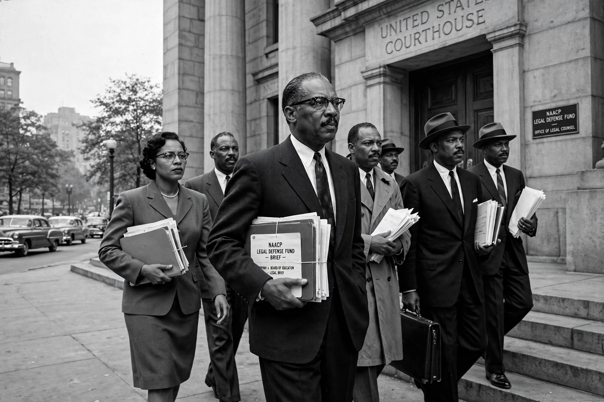

The NAACP Legal Defense and Educational Fund, Inc. (LDF) is a leading United States civil rights law organisation and law firm based in New York City. Founded in 1940 under the leadership of Thurgood Marshall, who later became the first African-American justice of the US Supreme Court, it was originally part of the NAACP and became a separate organisation in 1957.

| Founded | 1940 |
|---|---|
| Founder | Thurgood Marshall |
| Type | Nonprofit civil rights law firm |
| Headquarters | New York City, US |
| Focus | Education, voting rights, criminal justice, economic justice |
Under Marshall and lawyers including Charles Hamilton Houston's earlier strategy, the LDF pursued a litigation campaign against school segregation, culminating in Brown v. Board of Education (1954), which declared state-sponsored segregation in public schools unconstitutional. Marshall argued the case before the Supreme Court.
The LDF litigates and advocates on voting rights (including after Shelby County v. Holder), capital punishment and criminal justice reform, school desegregation and educational opportunity, fair housing and employment. Notable leaders have included Jack Greenberg, Elaine Jones, Ted Shaw, Sherrilyn Ifill (2013–2022) and Janai Nelson. It maintains the Thurgood Marshall Institute as its research and policy arm.